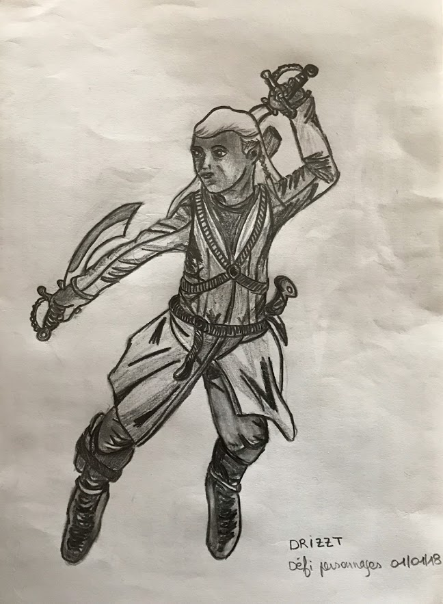

Défi 12 personnages de fantasy : Drizzt Do’Urden
Drizzt Do’Urden est un elfe noir de la série Les Royaumes oubliés de Ed Greenwood. L’univers de Greenwood est vaste et englobe de nombreuses aventures de personnages inventés par d’autres auteurs. La légende de Drizzt a été créée par R.A. Salvatore.
Drizzt vit sous terre avec son peuple, banni de la surface depuis des siècles. Notre héros n’adhère pas particulièrement aux idées et aux moeurs des elfes noirs, qui sont belliqueux et organisent leur société autour de castes sociales et de meurtres. Drizzt finit donc par quitter les souterrains pour ragagner la surface.
Je n’ai pas lu son histoire, mais je le ferai bien un jour :).
J’ai voulu représenter Drizzt en plein combat pour ses idées. Il est puissant et se bat pour survivre, même s’il a bon fond et qu’il préfèrerait éviter la violence. Difficile pour moi de représenter un elfe dans toute sa splendeur, aussi noir soit-il ^^. J’ai donc essayé de reproduire une posture de l’elfe Legolas (du Seigneur des anneaux de J.R.R. Tolkien). J’ai changé un peu sa tenue et l’ai agrémentée des bracelets magiques de Drizzt, de ses cimeterres et d’une sacoche avec un couteau au mollet. Il a les yeux violets, mais ça ne se voit pas sur la photo du dessin.
